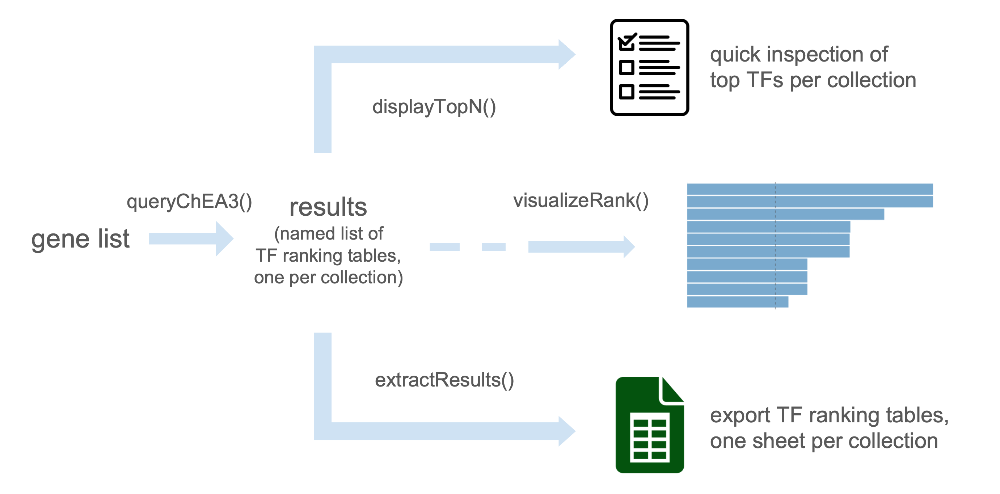
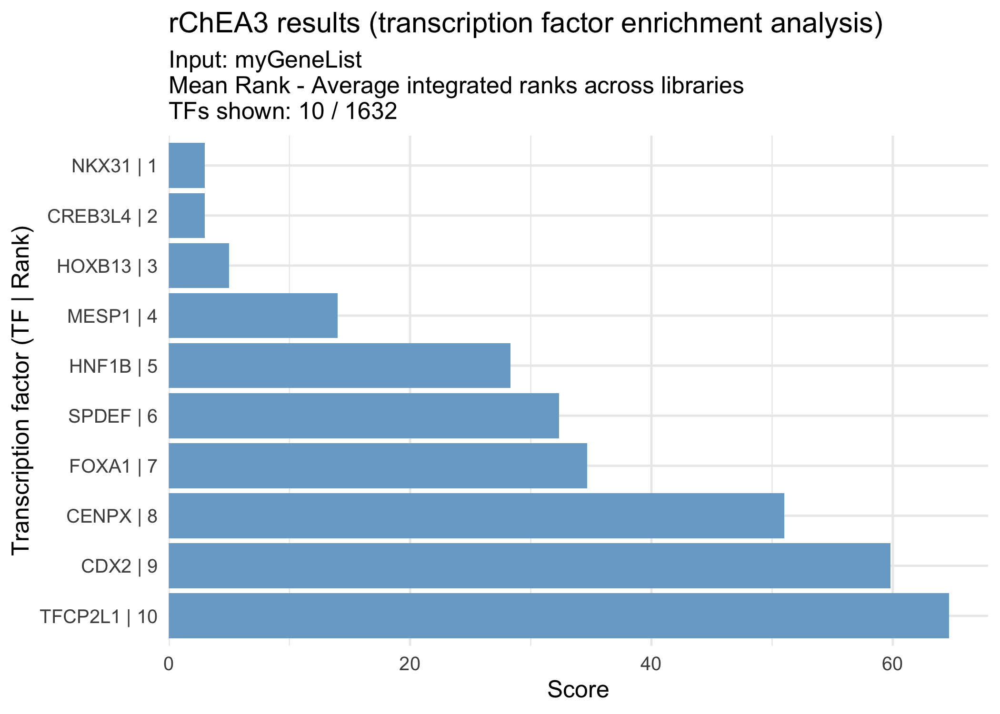

An R client for the ChEA3 transcription factor enrichment API.
While ChEA3 is only available online as a web server, rChEA3 provides access to this tool directly in R, streamlining transcription factor enrichment into your workflow. Submit gene lists, retrieve TF rankings from multiple evidence sources (ChIP-seq, co-expression, literature), and integrate results into your R/Bioconductor analysis pipeline.
The package includes convenient functions to query the API, retrieve results across collections, prepare outputs for downstream analysis, and generate publication-ready figures.

Installation
From CRAN (stable version)
install.packages("rChEA3")From GitHub (development version)
You can install the development version of rChEA3 from GitHub with:
# install.packages("pak") # if not already installed
pak::pak("ckntav/rChEA3")
# or, alternatively:
# install.packages("devtools") # if not already installed
devtools::install_github("ckntav/rChEA3")Quick start
This quick example demonstrates how to conveniently interrogate the ChEA3 tool.
1. Query ChEA3
my_gene_list <- c("KLK3", "AR", "FKBP5", "TMPRSS2", "KLK2", "CYP1B1")The gene list should consist of HGNC-approved gene symbols, as ChEA3 only accepts these standardized gene identifiers.
results <- queryChEA3(my_gene_list)
#> Available results
#> ──────────────────────────────
#> ► Integrated Results
#> ✔ Mean Rank — Average integrated ranks across libraries
#> Use <your_result>[["Integrated--meanRank"]]
#> ✔ Top Rank — Top integrated rank across libraries
#> Use <your_result>[["Integrated--topRank"]]
#> ────────────────────
#> ► ChIP-Seq
#> ✔ ENCODE — Interactions mined from the ENCODE project
#> Use <your_result>[["ENCODE--ChIP-seq"]]
#> ✔ ReMap — Interactions mined from the ReMap project
#> Use <your_result>[["ReMap--ChIP-seq"]]
#> ✔ Literature — Interactions mined from the literature
#> Use <your_result>[["Literature--ChIP-seq"]]
#> ────────────────────
#> ► Coexpression
#> ✔ ARCHS4 — TF-target coexpression in the ARCHS4 dataset
#> Use <your_result>[["ARCHS4--Coexpression"]]
#> ✔ GTEx — TF-target coexpression in the GTEx dataset
#> Use <your_result>[["GTEx--Coexpression"]]
#> ────────────────────
#> ► Co-occurrence
#> ✔ Enrichr — TF-target co-occurrence in Enrichr queries
#> Use <your_result>[["Enrichr--Queries"]]
#> ────────────────────This function sends the query gene list to the ChEA3 web server and performs the transcription factor enrichment analysis.
Once the analysis is complete, the available results from different collections are displayed.
Note: For detailed information about the different ChEA3 collections and their underlying methodology, see Keenan et al., 2019.
2. Inspect top results
The function displayTopN() allows quick inspection of the results by showing the top-ranked transcription factors from each collection. By default, the top 10 transcription factors are displayed for every collection, without applying any threshold on score, p-value, or FDR.
displayTopN(results)
#> Top 10 per collection
#> ──────────────────────────────
#> ► Integrated Results
#> ✔ Mean Rank - Average integrated ranks across libraries
#> Rank TF Score
#> 1 NKX31 3.00
#> 2 CREB3L4 3.00
#> 3 HOXB13 5.00
#> 4 MESP1 14.00
#> 5 HNF1B 28.33
#> 6 SPDEF 32.33
#> 7 FOXA1 34.67
#> 8 CENPX 51.00
#> 9 CDX2 59.80
#> 10 TFCP2L1 64.67
#>
#> ✔ Top Rank - Top integrated rank across libraries
#> Rank TF Score
#> 1 NKX31 0.0006143
#> 2 CREB3L4 0.0006223
#> 3 TFCP2L1 0.0007123
#> 4 ERG 0.0012290
#> 5 EVX1 0.0012450
#> 6 TBX3 0.0018430
#> 7 HOXB13 0.0018670
#> 8 ZNF613 0.0021370
#> 9 SIM2 0.0024570
#> 10 GATA2 0.0024890
#>
#> ────────────────────
#> ► ChIP-Seq
#> ✔ ENCODE - Interactions mined from the ENCODE project
#> Rank TF Scaled Rank Set_name Intersect FET p-value FDR
#> 1 NR3C1 0.008475 NR3C1_ECC1_HG19 1 0.06858 1
#> 2 ESR1 0.016950 ESR1_T47D_HG19 1 0.12410 1
#> 3 TCF3 0.025420 TCF3_MYOCYTE_MM9 2 0.12620 1
#> 4 MAFK 0.033900 MAFK_H1HESC_HG19 2 0.13830 1
#> 5 TCF7L2 0.042370 TCF7L2_HEK293_HG19 2 0.13920 1
#> 6 FOSL1 0.050850 FOSL1_K562_HG19 1 0.23320 1
#> 7 SRF 0.059320 SRF_K562_HG19 1 0.24370 1
#> 8 PAX5 0.067800 PAX5_GM12891_HG19 1 0.24440 1
#> 9 STAT1 0.076270 STAT1_HELAS3_HG19 1 0.25430 1
#> 10 MYOD1 0.084750 MYOD1_MYOCYTE_MM9 2 0.25490 1
#> Odds Ratio
#> 16.420
#> 8.746
#> 3.907
#> 3.680
#> 3.664
#> 4.316
#> 4.099
#> 4.084
#> 3.897
#> 2.396
#>
#> ✔ ReMap - Interactions mined from the ReMap project
#> Rank TF Scaled Rank Set_name Intersect FET p-value FDR Odds Ratio
#> 1 AR 0.003367 AR 4 0.003131 0.93 9.224
#> 2 HOXB13 0.006734 HOXB13 3 0.018790 1.00 6.942
#> 3 ATF1 0.010100 ATF1 3 0.018950 1.00 6.918
#> 4 NME2 0.013470 NME2 2 0.097190 1.00 4.609
#> 5 GATA2 0.016840 GATA2 2 0.097190 1.00 4.609
#> 6 SPI1 0.020200 SPI1 2 0.097510 1.00 4.599
#> 7 ERG 0.023570 ERG 2 0.097510 1.00 4.599
#> 8 PGR 0.026940 PGR 2 0.097510 1.00 4.599
#> 9 STAT1 0.030300 STAT1 2 0.097620 1.00 4.596
#> 10 ZNF165 0.033670 ZNF165 1 0.116500 1.00 9.360
#>
#> ✔ Literature - Interactions mined from the literature
#> Rank TF Scaled Rank Set_name
#> 1 AR 0.006098 AR_21909140_CHIPSEQ_LNCAP_HUMAN
#> 2 BACH1 0.012200 BACH1_22875853_CHIPPCR_HELAANDSCP4_HUMAN
#> 3 ESR1 0.018290 ESR1_22446102_CHIPSEQ_UTERI_MOUSE
#> 4 EGR1 0.024390 EGR1_19374776_CHIPCHIP_THP1_HUMAN
#> 5 ARNT 0.030490 ARNT_22903824_CHIPSEQ_MCF7_HUMAN
#> 6 TP53 0.036590 TP53_20018659_CHIPCHIP_R1E_MOUSE
#> 7 HOXD13 0.042680 HOXD13_18407260_CHIPCHIP_INVIVOINDEVELOPINGLIMBS_MOUSE
#> 8 E2F1 0.048780 E2F1_21310950_CHIPSEQ_MCF7_HUMAN
#> 9 RELA 0.054880 RELA_24523406_CHIPSEQ_FIBROSARCOMA_HUMAN
#> 10 MYCN 0.060980 MYCN_19997598_CHIPCHIP_NEUROBLASTOMA_HUMAN
#> Intersect FET p-value FDR Odds Ratio
#> 2 0.005104 1 23.800
#> 3 0.014370 1 7.720
#> 3 0.015000 1 7.591
#> 1 0.023140 1 50.490
#> 2 0.046470 1 7.159
#> 2 0.050690 1 6.808
#> 1 0.057860 1 19.600
#> 2 0.057900 1 6.299
#> 2 0.066570 1 5.800
#> 1 0.070840 1 15.870
#>
#> ────────────────────
#> ► Coexpression
#> ✔ ARCHS4 - TF-target coexpression in the ARCHS4 dataset
#> Rank TF Scaled Rank Set_name Intersect FET p-value FDR
#> 1 NKX31 0.0006143 NKX31_ARCHS4_PEARSON 5 2.929e-07 0.000477
#> 2 ERG 0.0012290 ERG_ARCHS4_PEARSON 4 8.918e-06 0.001860
#> 3 TBX3 0.0018430 TBX3_ARCHS4_PEARSON 4 9.035e-06 0.001860
#> 4 SIM2 0.0024570 SIM2_ARCHS4_PEARSON 4 9.035e-06 0.001860
#> 5 HOXB13 0.0030710 HOXB13_ARCHS4_PEARSON 4 9.153e-06 0.001860
#> 6 CREB3L4 0.0036860 CREB3L4_ARCHS4_PEARSON 4 9.153e-06 0.001860
#> 7 HOXA13 0.0043000 HOXA13_ARCHS4_PEARSON 4 9.153e-06 0.001860
#> 8 FOXA1 0.0049140 FOXA1_ARCHS4_PEARSON 4 9.153e-06 0.001860
#> 9 AR 0.0055280 AR_ARCHS4_PEARSON 3 2.464e-04 0.034100
#> 10 MESP1 0.0061430 MESP1_ARCHS4_PEARSON 3 2.489e-04 0.034100
#> Odds Ratio
#> 56.48
#> 45.34
#> 45.18
#> 45.18
#> 45.03
#> 45.03
#> 45.03
#> 45.03
#> 33.89
#> 33.77
#>
#> ✔ GTEx - TF-target coexpression in the GTEx dataset
#> Rank TF Scaled Rank Set_name Intersect FET p-value FDR Odds Ratio
#> 1 CREB3L4 0.0006223 CREB3L4 4 8.802e-06 0.00207 45.49
#> 2 EVX1 0.0012450 EVX1 4 8.802e-06 0.00207 45.49
#> 3 HOXB13 0.0018670 HOXB13 4 8.802e-06 0.00207 45.49
#> 4 GATA2 0.0024890 GATA2 4 8.918e-06 0.00207 45.34
#> 5 NKX31 0.0031110 NKX31 4 8.918e-06 0.00207 45.34
#> 6 ISL1 0.0037340 ISL1 4 8.918e-06 0.00207 45.34
#> 7 HOXA13 0.0043560 HOXA13 4 9.035e-06 0.00207 45.18
#> 8 ZNF761 0.0049780 ZNF761 3 2.441e-04 0.02880 34.00
#> 9 GLIS1 0.0056000 GLIS1 3 2.464e-04 0.02880 33.89
#> 10 FEV 0.0062230 FEV 3 2.464e-04 0.02880 33.89
#>
#> ────────────────────
#> ► Co-occurrence
#> ✔ Enrichr - TF-target co-occurrence in Enrichr queries
#> Rank TF Scaled Rank Set_name Intersect FET p-value FDR Odds Ratio
#> 1 TFCP2L1 0.0007123 TFCP2L1 3 0.0002417 0.0802 34.12
#> 2 CREB3L4 0.0014250 CREB3L4 3 0.0002441 0.0802 34.00
#> 3 ZNF613 0.0021370 ZNF613 3 0.0002464 0.0802 33.89
#> 4 ZBED1 0.0028490 ZBED1 2 0.0053500 0.0802 23.22
#> 5 ZNF331 0.0035610 ZNF331 2 0.0054570 0.0802 22.98
#> 6 ZNF600 0.0042740 ZNF600 2 0.0054570 0.0802 22.98
#> 7 ZNF488 0.0049860 ZNF488 2 0.0054930 0.0802 22.90
#> 8 ZNF57 0.0056980 ZNF57 2 0.0054930 0.0802 22.90
#> 9 FOXA2 0.0064100 FOXA2 2 0.0055290 0.0802 22.82
#> 10 HOXB13 0.0071230 HOXB13 2 0.0055290 0.0802 22.82
#>
#> ────────────────────3. Extract results from a specific collection
The function queryChEA3() returns a list of data frames, one for each ChEA3 collection. Each element of the list contains transcription factors (TFs) with their associated statistics (rank, score, p-value, or FDR depending on the collection).
To access a specific result table, use the variable storing the results and specify the corresponding collection name. These tables can be indexed by name, explored, filtered, and integrated into downstream R/Bioconductor analyses.
As an example, the Mean Rank integrated results can be retrieved with:
meanRank_results <- results[["Integrated--meanRank"]]
head(meanRank_results)
#> Query Name Rank TF Score
#> 1 rChEA3_query 1 NKX31 3.00
#> 2 rChEA3_query 2 CREB3L4 3.00
#> 3 rChEA3_query 3 HOXB13 5.00
#> 4 rChEA3_query 4 MESP1 14.00
#> 5 rChEA3_query 5 HNF1B 28.33
#> 6 rChEA3_query 6 SPDEF 32.33
#> Library
#> 1 ARCHS4 Coexpression,1;GTEx Coexpression,5
#> 2 ARCHS4 Coexpression,6;Enrichr Queries,2;GTEx Coexpression,1
#> 3 ARCHS4 Coexpression,5;Enrichr Queries,10;ReMap ChIP-seq,2;GTEx Coexpression,3
#> 4 ARCHS4 Coexpression,10;Enrichr Queries,16;GTEx Coexpression,16
#> 5 ARCHS4 Coexpression,32;Enrichr Queries,21;ReMap ChIP-seq,32
#> 6 ARCHS4 Coexpression,11;Enrichr Queries,75;GTEx Coexpression,11
#> Overlapping_Genes
#> 1 AR,TMPRSS2,KLK3,KLK2,FKBP5
#> 2 AR,TMPRSS2,CYP1B1,KLK3,KLK2,FKBP5
#> 3 AR,TMPRSS2,CYP1B1,KLK3,KLK2
#> 4 AR,TMPRSS2,CYP1B1,KLK3,KLK2
#> 5 CYP1B1,TMPRSS2
#> 6 AR,TMPRSS2,CYP1B1,KLK3,KLK2This table contains the averaged ranks of transcription factors across all ChEA3 libraries, providing a global view of TF enrichment for your gene set.
4. Visualize results
The function visualizeRank() creates a bar plot of the top-ranked transcription factors from a result table. By default, the plot displays the most significant TFs in descending order, making it easy to quickly identify the strongest candidates for your gene list.
visualizeRank(meanRank_results)
Contributing
Pull requests are welcome. If you find a bug, have a suggestion, or want to add a feature, please open an issue first to discuss what you would like to change.
Citation
If you use this package, please cite:
Keenan, A.B., Torre, D., Lachmann, A., Leong, A.K., Wojciechowicz, M.L., Utti, V., Jagodnik, K.M., Kropiwnicki, E., Wang, Z., & Ma’ayan, A. (2019). ChEA3: transcription factor enrichment analysis by orthogonal omics integration. Nucleic Acids Research, 47(W1), W212–W224. doi:10.1093/nar/gkz446
Resources
- ChEA3 web server - For detailed information about collections and methodology
- Original Publication - ChEA3 paper in Nucleic Acids Research